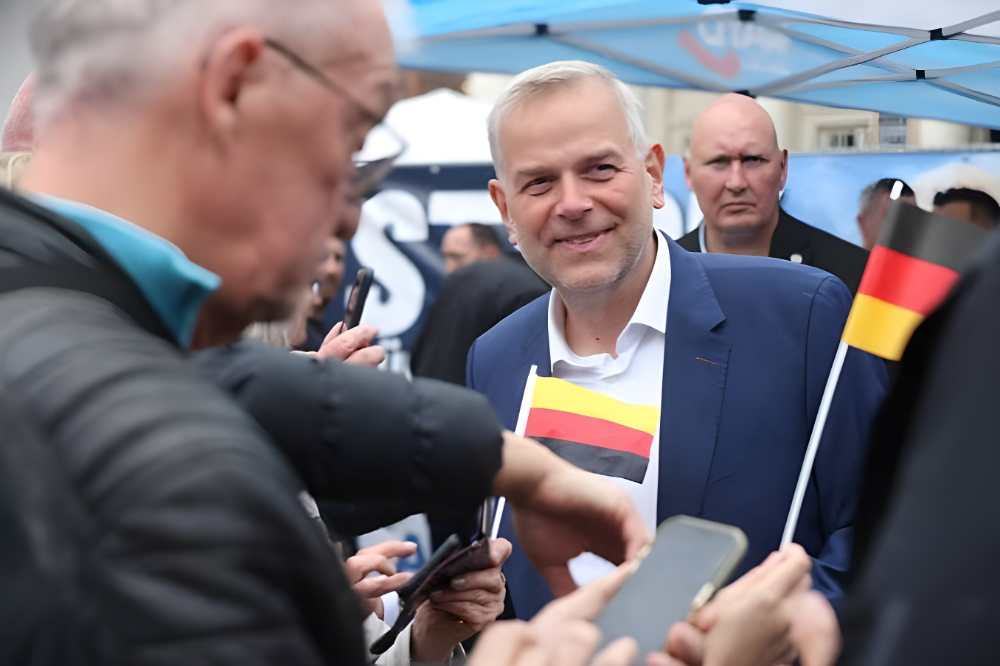

Dimanche 20 septembre 2026, deux Länder renouvelaient leur parlement le même jour. Dans le Mecklembourg-Poméranie occidentale, l'AfD de Leif-Erik Holm devance de peu le SPD de la ministre-présidente Manuela Schwesig et devient, selon les projections de la soirée, la première force du Landtag de Schwerin. À Berlin, Die Linke d'Elif Eralp double son score de 2023 et arrive en tête devant la CDU, une première dans l'histoire de la capitale. Dans les deux scrutins, la CDU de Friedrich Merz est la grande perdante, deux semaines après sa débâcle en Saxe-Anhalt.
Dans le Mecklembourg-Poméranie occidentale, le duel annoncé entre l'extrême droite et les sociaux-démocrates s'est joué dans un mouchoir de poche. Selon la projection de la Forschungsgruppe Wahlen diffusée dans la soirée pour la ZDF, l'AfD conduite par Leif-Erik Holm obtient 38,1 % des voix, contre 35,5 % au SPD de Manuela Schwesig. La ministre-présidente, qui avait entamé la campagne loin derrière, a comblé l'essentiel de son retard sans parvenir à repasser devant.
Le résultat est historique à double titre. L'AfD devient la première force d'un Land pour la troisième fois, après la Thuringe et la Saxe-Anhalt, et plus que double son score de 2021 (16,7 %). Dans le même mouvement, la CDU s'effondre à environ 5 % des suffrages, contre 13,3 % cinq ans plus tôt : c'est le plus mauvais résultat de son histoire dans une élection de Land, au niveau fédéral ou européen, et son maintien même au Landtag se joue au dixième de point près. Die Linke, partenaire de coalition sortant, recule à 6,5 % et les Verts se maintiennent de justesse à 5,6 %, tandis que le BSW échoue à 4,9 % et que le FDP disparaît avec 1 % des voix.
La participation, elle, a nettement progressé : 78 % contre 70,8 % en 2021, dans un Land où environ 1,3 million d'électeurs étaient appelés aux urnes. Cette mobilisation accrue, comme en Saxe-Anhalt deux semaines plus tôt, a surtout profité aux deux formations en tête.
Arithmétiquement, l'AfD n'a aucune option de pouvoir : toutes les formations représentées au Landtag avaient exclu avant le scrutin de gouverner avec elle, conformément au « pare-feu » (Brandmauer) appliqué depuis des années au niveau fédéral. Le coprésident fédéral du parti, Tino Chrupalla, a néanmoins revendiqué un « mandat de gouvernement » et réclamé la démission du chancelier.
Côté SPD, Manuela Schwesig a annoncé vouloir continuer à gouverner. Mais sa coalition sortante avec Die Linke perd sa majorité : sur un Landtag ramené à 71 sièges, où la majorité absolue s'établit à 36, la projection de la soirée attribue 30 sièges à l'AfD, 28 au SPD, 5 à Die Linke, 4 aux Verts et 4 à la CDU. Un attelage rouge-rouge-vert passerait donc d'un seul siège, à condition que les Verts franchissent effectivement la barre. Si ce n'était pas le cas, un gouvernement minoritaire SPD–Linke dépendrait de voix chrétiennes-démocrates — une hypothèse délicate, la CDU ayant exclu par décision de congrès fédéral toute coopération avec Die Linke comme avec l'AfD.
Les premières estimations d'Infratest dimap (ARD) et de la Forschungsgruppe Wahlen (ZDF) donnent l'AfD en tête à Schwerin et Die Linke largement première à Berlin. La participation apparaît en forte hausse dans les deux Länder.
Le chancelier et président de la CDU indique à Berlin qu'il entend rester en fonction et poursuivre le cours réformateur de sa coalition, malgré le double revers de son parti.
Manuela Schwesig revendique le maintien de son gouvernement. Tino Chrupalla (AfD) affirme que son parti dispose d'un mandat pour gouverner et demande le départ du chancelier.
À Schwerin, la CDU oscille autour des 5 % et le BSW reste juste en dessous. À Berlin, Die Linke se stabilise autour de 25 % et les Verts se prononcent ouvertement pour une coalition avec Die Linke et le SPD.
Le résultat provisoire est établi dans la nuit par les directions des scrutins, le résultat définitif quelques semaines plus tard par les commissions électorales des Länder. En 2023 à Berlin, cet écart avait suffi à modifier l'ordre d'arrivée entre deux partis.
Dans la capitale, le renversement est encore plus spectaculaire. Die Linke, menée par Elif Eralp, obtient environ 25 % des voix selon les projections, contre 12,2 % en 2023 : un doublement qui la propulse pour la première fois de son histoire en tête d'une élection à l'Abgeordnetenhaus. La CDU du sénateur aux Finances Stefan Evers tombe autour de 19-20 %, contre 28,2 % trois ans plus tôt. L'AfD progresse nettement à environ 16 % (9,1 % en 2023), devant les Verts (autour de 14-15 %, contre 18,4 %) et le SPD, qui s'effondre à 12 % — son plus mauvais résultat dans la ville-État depuis 1990.
Le FDP, déjà sorti du parlement en 2023, reste très loin du seuil avec environ 2,5 %, tandis que le BSW joue son entrée à la décimale près autour de 5 %. La participation bondit, passant de 62,9 % en 2023 à un niveau estimé entre 72 et 75 %, sur quelque 2,5 millions d'inscrits.
| Parti | Berlin 2026 (projection) | 2023 |
|---|---|---|
| Die Linke | ≈ 25 % | 12,2 % |
| CDU | ≈ 19–20 % | 28,2 % |
| AfD | ≈ 16 % | 9,1 % |
| Grüne | ≈ 14–15 % | 18,4 % |
| SPD | ≈ 12 % | 18,4 % |
| FDP | ≈ 2,5 % | 4,6 % |
« Dans notre ville, l'amour et la justice l'ont emporté sur la haine, et ce signal est envoyé au monde entier. »
— Elif Eralp (Die Linke), soirée électorale du 20 septembre 2026La coalition sortante entre la CDU et le SPD perd sa majorité, et aucune alliance à deux ne paraît en mesure de gouverner. L'option la plus probable est une coalition à trois entre Die Linke, les Verts et le SPD : sur un parlement projeté à 130 sièges, où la majorité absolue s'établit à 66, cet attelage réunirait environ 73 sièges, la projection attribuant 36 sièges à Die Linke, 27 à la CDU, 23 à l'AfD, 20 aux Verts et 17 au SPD. Les Verts berlinois se sont d'ailleurs prononcés dès la soirée en faveur de cette formule. L'AfD, elle, reste écartée de toute négociation.
Si ce scénario se confirme, Berlin serait dirigée pour la première fois depuis la réunification par une maire issue de Die Linke. Juriste de 45 ans, mère de deux enfants, Elif Eralp siège à l'Abgeordnetenhaus depuis 2021 et n'occupait jusqu'à la campagne qu'un rôle de vice-présidente de groupe. Elle a construit sa campagne sur le logement, promettant de mettre fin à « l'arnaque des loyers » et de rendre Berlin « de nouveau abordable ». Elle doit aussi répondre aux critiques visant la présence, dans son parti, de militants propalestiniens accusés d'antisémitisme.
Ces deux scrutins ne changent pas seulement les équilibres à Schwerin et à Berlin : ils fragilisent un peu plus la coalition fédérale entre l'Union et le SPD. Deux semaines après la déroute de Saxe-Anhalt, la CDU enregistre le plus mauvais résultat de son histoire dans un Land et perd la capitale, tandis que son partenaire social-démocrate recule dans les deux cas. Friedrich Merz a tenu à écarter dès le soir toute hypothèse de départ, affirmant vouloir « faire avancer le pays » et rappelant que « les réformes doivent venir ». Mais la dynamique installée par l'AfD à l'est, désormais première force dans un troisième Land, et l'apparition à Berlin d'un pôle de gauche capable de gouverner dessinent un paysage politique où les deux partis de gouvernement sont attaqués simultanément sur leurs deux flancs. Les chiffres publiés dimanche soir restent des projections : le résultat provisoire, puis le résultat définitif, diront notamment si la CDU se maintient au Landtag de Schwerin et si le BSW entre dans l'un ou l'autre parlement — deux inconnues dont dépend directement la possibilité de former une majorité.
Am Sonntag, den 20. September 2026, wählten zwei Bundesländer am selben Tag ein neues Parlament. In Mecklenburg-Vorpommern liegt die AfD von Leif-Erik Holm nach den Hochrechnungen des Wahlabends knapp vor der SPD von Ministerpräsidentin Manuela Schwesig und wird damit stärkste Kraft im Schweriner Landtag. In Berlin verdoppelt die Linke mit Elif Eralp ihr Ergebnis von 2023 und liegt erstmals in der Geschichte der Hauptstadt vor der CDU. In beiden Wahlen ist die CDU von Friedrich Merz die große Verliererin — zwei Wochen nach ihrer Niederlage in Sachsen-Anhalt.
In Mecklenburg-Vorpommern ging das angekündigte Duell zwischen der Rechtsaußenpartei und den Sozialdemokraten denkbar knapp aus. Nach der Hochrechnung der Forschungsgruppe Wahlen für das ZDF vom späten Abend erreicht die AfD mit Spitzenkandidat Leif-Erik Holm 38,1 Prozent, die SPD von Manuela Schwesig 35,5 Prozent. Die Ministerpräsidentin, die mit deutlichem Rückstand in den Wahlkampf gestartet war, holte fast auf, zog aber nicht mehr vorbei.
Das Ergebnis ist in zweierlei Hinsicht historisch. Die AfD wird nach Thüringen und Sachsen-Anhalt zum dritten Mal stärkste Kraft in einem Bundesland und mehr als verdoppelt ihr Ergebnis von 2021 (16,7 Prozent). Zugleich stürzt die CDU auf rund 5 Prozent ab, nach 13,3 Prozent vor fünf Jahren: das schlechteste Ergebnis ihrer Geschichte bei einer Landtags-, Bundestags- oder Europawahl, wobei selbst ihr Verbleib im Landtag an Zehntelpunkten hängt. Die Linke, bisheriger Koalitionspartner, fällt auf 6,5 Prozent zurück, die Grünen halten sich knapp bei 5,6 Prozent, während das BSW mit 4,9 Prozent scheitert und die FDP mit 1 Prozent verschwindet.
Die Wahlbeteiligung stieg deutlich: 78 Prozent nach 70,8 Prozent im Jahr 2021, bei rund 1,3 Millionen Wahlberechtigten. Wie zwei Wochen zuvor in Sachsen-Anhalt kam diese höhere Mobilisierung vor allem den beiden führenden Parteien zugute.
Rechnerisch hat die AfD keine Machtoption: Alle im Landtag vertretenen Parteien hatten eine Koalition mit ihr vor der Wahl ausgeschlossen, entsprechend der seit Jahren geltenden „Brandmauer“. Bundessprecher Tino Chrupalla beanspruchte dennoch einen Regierungsauftrag und forderte den Rücktritt des Kanzlers.
Manuela Schwesig kündigte an, weiterregieren zu wollen. Ihre bisherige Koalition mit der Linken verliert jedoch die Mehrheit: In einem auf 71 Sitze verkleinerten Landtag, in dem die absolute Mehrheit bei 36 liegt, weist die Hochrechnung der AfD 30 Sitze zu, der SPD 28, der Linken 5, den Grünen 4 und der CDU 4. Ein rot-rot-grünes Bündnis käme damit auf eine Mehrheit von einer Stimme — vorausgesetzt, die Grünen überspringen die Hürde tatsächlich. Andernfalls wäre eine rot-rote Minderheitsregierung auf Stimmen der CDU angewiesen, was heikel ist: Die CDU lehnt per Bundesparteitagsbeschluss eine Zusammenarbeit mit der Linken ebenso ab wie mit der AfD.
Die ersten Prognosen von Infratest dimap (ARD) und der Forschungsgruppe Wahlen (ZDF) sehen die AfD in Schwerin vorn und die Linke in Berlin deutlich an der Spitze. Die Wahlbeteiligung liegt in beiden Ländern klar über der letzten Wahl.
Der Kanzler und CDU-Vorsitzende erklärt in Berlin, er wolle im Amt bleiben und den Reformkurs seiner Koalition fortsetzen — trotz der doppelten Niederlage seiner Partei.
Manuela Schwesig beansprucht die Fortsetzung ihrer Regierung. Tino Chrupalla (AfD) erklärt, seine Partei habe klar den Regierungsauftrag, und fordert den Rücktritt des Kanzlers.
In Schwerin pendelt die CDU um die 5 Prozent, das BSW bleibt knapp darunter. In Berlin stabilisiert sich die Linke bei rund 25 Prozent, und die Grünen sprechen sich offen für ein Bündnis mit Linken und SPD aus.
Das vorläufige Ergebnis wird in der Nacht von den Landeswahlleitungen ermittelt, das endgültige einige Wochen später von den Landeswahlausschüssen. In Berlin hatte dieser Unterschied 2023 gereicht, um die Reihenfolge zweier Parteien zu verändern.
In der Hauptstadt fällt der Umbruch noch deutlicher aus. Die Linke mit Elif Eralp erreicht den Hochrechnungen zufolge rund 25 Prozent nach 12,2 Prozent im Jahr 2023 — eine Verdopplung, die sie erstmals in ihrer Geschichte an die Spitze einer Abgeordnetenhauswahl bringt. Die CDU von Finanzsenator Stefan Evers fällt auf 19 bis 20 Prozent zurück, nach 28,2 Prozent vor drei Jahren. Die AfD legt auf rund 16 Prozent zu (9,1 Prozent im Jahr 2023) und liegt damit vor den Grünen (etwa 14 bis 15 Prozent nach 18,4) und der SPD, die auf 12 Prozent absackt — ihr schlechtestes Ergebnis im Stadtstaat seit 1990.
Die FDP, bereits 2023 aus dem Parlament geflogen, bleibt mit rund 2,5 Prozent weit von der Hürde entfernt, während das BSW um die 5 Prozent um den Einzug zittert. Die Wahlbeteiligung springt von 62,9 Prozent im Jahr 2023 auf geschätzte 72 bis 75 Prozent, bei rund 2,5 Millionen Wahlberechtigten.
| Partei | Berlin 2026 (Hochrechnung) | 2023 |
|---|---|---|
| Die Linke | ≈ 25 % | 12,2 % |
| CDU | ≈ 19–20 % | 28,2 % |
| AfD | ≈ 16 % | 9,1 % |
| Grüne | ≈ 14–15 % | 18,4 % |
| SPD | ≈ 12 % | 18,4 % |
| FDP | ≈ 2,5 % | 4,6 % |
„In unserer Stadt hat die Liebe und die Gerechtigkeit über den Hass gewonnen, und dieses Signal geht raus in die Welt.“
— Elif Eralp (Die Linke), Wahlabend des 20. September 2026Die bisherige Koalition aus CDU und SPD verliert ihre Mehrheit, und kein Zweierbündnis scheint regierungsfähig. Als wahrscheinlichste Option gilt eine Dreierkoalition aus Linken, Grünen und SPD: In einem auf 130 Sitze hochgerechneten Parlament, in dem die absolute Mehrheit bei 66 liegt, käme dieses Bündnis auf rund 73 Sitze — die Hochrechnung weist der Linken 36 Sitze zu, der CDU 27, der AfD 23, den Grünen 20 und der SPD 17. Die Berliner Grünen sprachen sich noch am Wahlabend für diese Variante aus. Die AfD bleibt von jeder Verhandlung ausgeschlossen.
Bestätigt sich dieses Szenario, würde Berlin erstmals seit der Wiedervereinigung von einer Regierenden Bürgermeisterin der Linken geführt. Die 45-jährige Juristin und zweifache Mutter Elif Eralp sitzt seit 2021 im Abgeordnetenhaus und stand bis zum Wahlkampf als stellvertretende Fraktionsvorsitzende eher in der zweiten Reihe. Ihren Wahlkampf baute sie auf das Thema Wohnen: Sie will die „Miet-Abzocke“ stoppen und Berlin „wieder bezahlbar“ machen. Zugleich muss sie sich mit Vorwürfen auseinandersetzen, in ihrer Partei seien offen antisemitische Palästina-Aktivisten aktiv.
Diese beiden Wahlen verschieben nicht nur die Kräfteverhältnisse in Schwerin und Berlin, sie schwächen auch die Bundeskoalition aus Union und SPD weiter. Zwei Wochen nach der Niederlage in Sachsen-Anhalt verbucht die CDU ihr schlechtestes Landtagswahlergebnis überhaupt und verliert die Hauptstadt, während ihr sozialdemokratischer Partner in beiden Ländern Federn lässt. Friedrich Merz schloss einen Rücktritt noch am Abend aus: Er wolle das Land voranbringen, die Reformen müssten kommen. Doch die Dynamik der AfD im Osten, die nun in einem dritten Bundesland stärkste Kraft ist, und das Entstehen eines regierungsfähigen linken Pols in Berlin zeichnen eine politische Landschaft, in der die beiden Regierungsparteien gleichzeitig an beiden Flanken angegriffen werden. Die Zahlen vom Sonntagabend bleiben Hochrechnungen: Erst das vorläufige und dann das endgültige Ergebnis werden zeigen, ob die CDU im Schweriner Landtag bleibt und ob das BSW in eines der beiden Parlamente einzieht — zwei offene Fragen, von denen die Mehrheitsbildung unmittelbar abhängt.